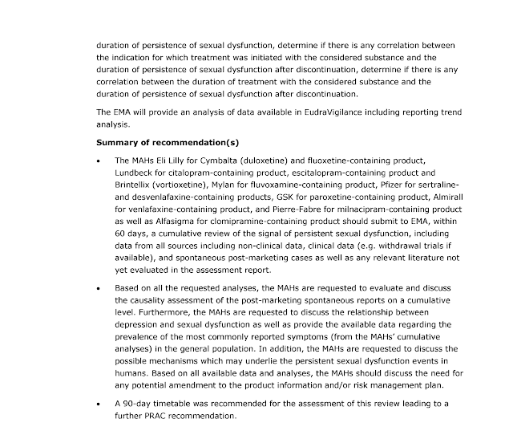

L’Agenzia Europea per i Medicinali (EMA) interroga le case farmaceutiche di SSRI e SNRI
Data: 21 Dicembre 2018
Nell’ambito della seduta PRAC (Pharmacovigilance Risk Assessment Committee) del 29-31 ottobre 2018, l’Agenzia Europea per i Medicinali (EMA – European Medicines Agency) ha richiesto alle case farmaceutiche di SSRI e SNRI chiarimenti approfonditi rispetto alle Disfunzioni sessuali persistenti in seguito alla sospensione del farmaco, da presentare all’EMA entro 60 giorni.
Il verbale è consultabile al seguente link (pag. 15-16): https://www.ema.europa.eu/documents/minutes/minutes-prac-meeting-29-31-october-2018_en.pdf

